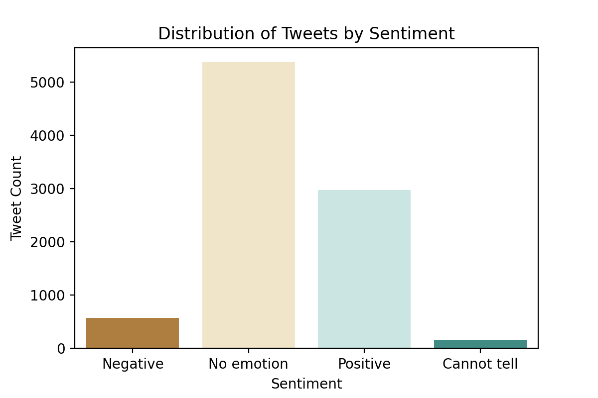
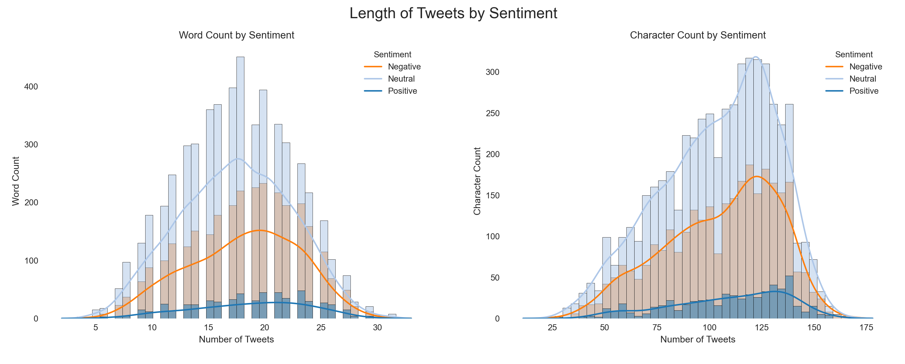
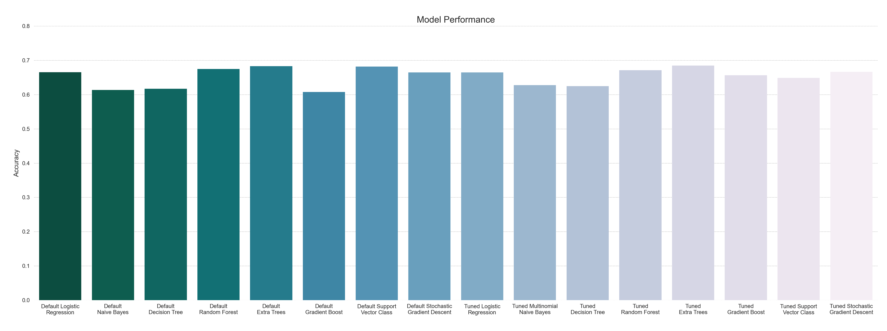
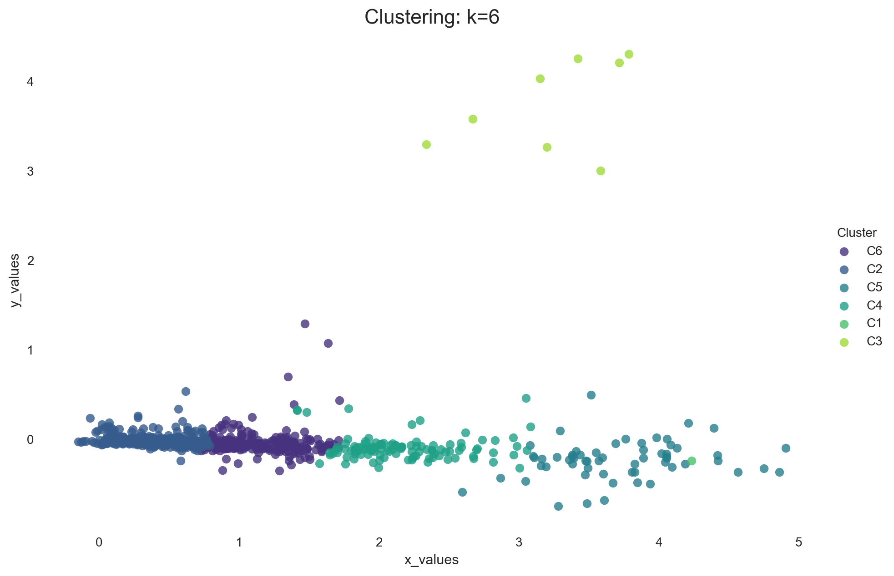
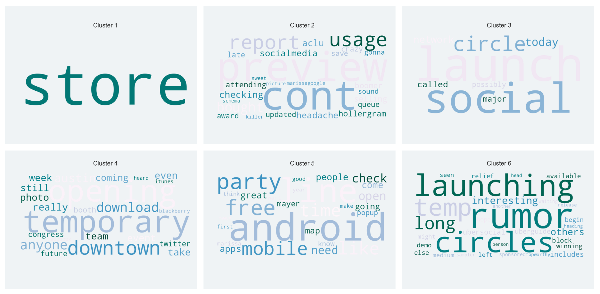
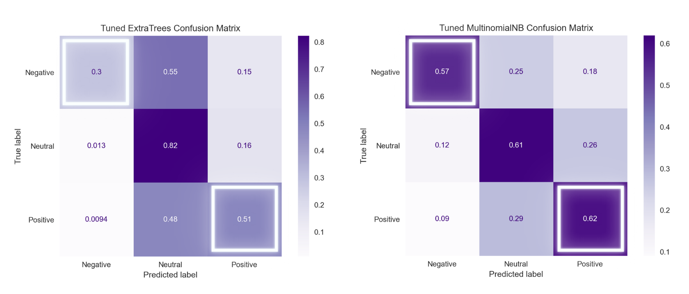
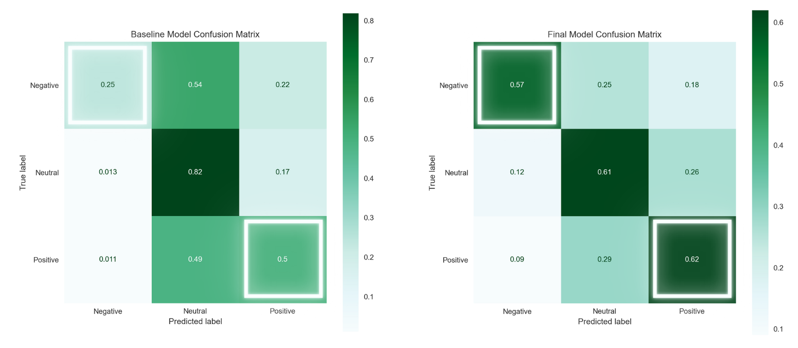

Project
I. Overview
An analysis and natural language processing of thousands of tweets is completed to predict sentiments during SXSW and provide insights to brands and products at the conference. Though the extra trees classifier has the highest test accuracy, the Multinomial Naive Bayes model performs the best at classifying negative and positive sentiments. Clustering analysis is performed to identify themes and topics that emerged, and recommendations are made accordingly.
II. Business Problem
South by Southwest (SXSW) is an annual conference where creative industries converge to showcase innovations in technology and the creative arts. The company that organizes the conference may be able to enhance customer experience by detecting and understanding sentiments of the attendees from past conference. Doing so will allow them to gain an understanding of the public opinion about events and brands featured at the conference. Using Twitter data I describe patterns and topics that emerge about the conference and Apple and Google products in particular at the SXSW 2011.
III. Data Understanding
The Twitter dataset (file) contains over 9,000 tweets posted during the SXSW 2011 which were labeled as negative, positive, and no emotion. The tweets are the independent feature used to predict the multiclass sentiments.
Class Imbalance
# Drop values for "cannot tell"
df = df.drop((df.loc[df['target']=="I can't tell"]).index)
One other feature on the dataset identifies Apple and Google products mentioned in the tweets but almost 6,000 are missing values.
Code
apple = ['iPad', 'Apple', 'iPad or iPhone App', 'iPhone', 'Other Apple product or service']
google = ['Google', 'Other Google product or service', 'Android App', 'Android']
df['brand'] = df['product'].apply(lambda x: 'google' if x in google else ('apple' if x in apple else 'unknown'))
# Group products by Apple and Google brands
pd.DataFrame(df.groupby(['brand', 'target'])['text'].count())
| brand | target | count |
|---|---|---|
| apple | Negative emotion | 387 |
| No emotion toward brand or product | 65 | |
| Positive emotion | 1943 | |
| Negative emotion | 131 | |
| No emotion toward brand or product | 26 | |
| Positive emotion | 719 | |
| unknown | Negative emotion | 51 |
| No emotion toward brand or product | 5281 | |
| Positive emotion | 306 |
Apple and Google both received more positive sentiments than negative and more tweets are tagged as Apple than Google overall.
# Create features for length of tweet by word count and by character
df['length'] = df['text'].apply(lambda x: len(x.split()))
df['characters'] = df['text'].apply(lambda x: len(x))

Graph for word count on the left appears to be about normally distributed. Distribution of character count on the right appears to be slightly skewed to the left. Overall the graphs show no significant difference in the length of tweets among negative, neutral, and positive sentiments.
Natural Language Processing
To process the text data, I perform the following preprocessing steps:
Basic Cleaning and Tokenization
- Standardization by lowercasing everything
- Remove special characters such as punctuation
- Tokenize to split the string into a list of words
Lemmatization and Stopwords
- Remove stopwords and other words specific to the data
- Lemmatizate to reduce each word to its most basic form
Vectorization
- Convert text to vectors as input to machine learning models
To apply the techniques above, I utilize one of the most popular frameworks for NLP that is the Natural Language Toolkit nltk:
Code
stopwords = nltk.corpus.stopwords.words('english')
# Remove words related to the conference and terms specific to the twitter platform
sxsw = ['sxsw', 'link', 'quot', 'rt', 'mention', 'apple', 'google', 'iphone', 'ipad', 'ipad2', 'rtmention']
stopwords.extend(sxsw)
text = [word for word in text if word not in stopwords]
lemmatizer = nltk.stem.WordNetLemmatizer()
text = [lemmatizer.lemmatize(word) for word in text]
# Example
RT @mention Mayer: 20% of Google searches are for local information #SXSW ^pr
# Result
['mayer', 'search', 'local', 'information']
Data Visualization
To highlight significant textual data points, I use the data visualization technique WordCloud which represents the text data and indicates frequencies by the size of words:
- Positive Sentiments about Apple such as the
popupstore at the conference.
Sample tweets
"The #sxsw Apple Popup Store is open at noon, has a fresh shipment of iPad 2's, and I'm pretty sure I'm going to get one. [fingers crossed]"
"I've been having meetings while I'm in line at the #SXSW PopUp Apple Store for the iPad2. I love this place!"
- Negative Sentiments toward Apple such as Kara Swisher’s line
Apple is a fascist companyduring an interview which was quoted all over Twitter.
Sample tweets
"Too quotable --> RT \x89ÛÏ@mention "Apple is the most elegant fascist company in America." #flip-board #SXSW"
"Kara Swisher: Apple is the most stylish fascist company in America #sxsw"
- Positive Sentiments about Google such as
Marissa Meyerwho was a keynote at the conference.
Sample tweets
"Racing to ballroom D to see @mention Marissa Mayer. #sxsw #sxswi"
"The quiet before the storm at #SXSW - Looking forward to seeing Google's Marissa Mayer"
- Negative Sentiments toward Google such as the words
caring muchmentioned by Tim O’Reilly in one of the opening sessions.
Sample tweets
"So true!!! RT @mention 'Google lost its way by caring too much for the business vs. the users' - @mention #psych #sxsw"
"I think #Google lost their way by caring too much about their business (instead of their users) Tim O'Reilly #sxsw #pnid"
IV. Data Modeling
To begin with, I build a machine learning pipeline using word count vectors and Logistic Regression as the Baseline Model.
# Basic vectorization
cv = CountVectorizer(stop_words='english')
baseline_model = LogisticRegression(max_iter=1000, random_state=112221)
baseline = Pipeline(steps=[('vectorizer', cv), ('baseline', baseline_model)])
baseline.fit(X_train_processed, y_train)
baseline_pred = baseline.predict(X_test_processed)
accuracy_score(y_test, baseline_pred)
0.6768402154398564
Then, I change the vectorizer to TfidfVectorizer to use word frequency vectors. Term Frequency-Inverse Document Frequency measures the frequency of a word occurring in a document, down-weighted by the number of documents in which it occurs (source).
tfidf = TfidfVectorizer(stop_words='english', lowercase=False, ngram_range=(1,2))
tfidfpipe = Pipeline(steps=[('tfidf', tfidf), ('baseline', baseline_model)])
tfidfpipe.fit(X_train_processed, y_train)
tfidf_pred = tfidfpipe.predict(X_test_processed)
accuracy_score(y_test, tfidf_pred)
0.6885098743267505
Next, I rebalance the class distribution by Random Oversampling that randomly duplicates examples of the minority classes in the train set.
oversampler = RandomOverSampler(sampling_strategy='not majority', random_state=112221)
X_train_res, y_train_res = oversampler.fit_resample(X_train_processed, y_train)
tfidfpipe.fit(X_train_res, y_train_res)
oversampled_pred = tfidfpipe.predict(X_test_processed)
accuracy_score(y_test, oversampled_pred)
0.6651705565529623
Classification Algorithms
- Logistic Regression
- Multinomial Naive Bayes
- Decision Tree
- Random Forests
- Extra Trees
- Gradient Boost
- Support Vector Machine
- Stochastic Gradient Descent
A grid search (notebook) is implemented to optimize the models by tuning their hyperparameters.

Across the chart, the Extra Trees classifier attains the best cross validation score of 87% and the highest above at 69% accuracy on the final evaluation using the test set.
Clustering Analysis
Clustering text documents is completed (notebook) using the K-Means clustering algorithm.
from gensim.models import Word2Vec
from sklearn.decomposition import PCA
# Vectorization using Word2Vec model
model = Word2Vec(corpus, size=100, min_count=1)
vectors = model[model.wv.vocab]
words = list(model.wv.vocab)
# Fit PCA to word vectors to reduce dimensionality
pca = PCA(n_components=2)
PCA_result = pca.fit_transform(vectors)
To explore a range of different k values, I use the open source data mining toolkit Orange.
Here, I set the number of clusters to 6.

Sample vectors
| x_values | y_values | count | word | Cluster | Silhouette | |
|---|---|---|---|---|---|---|
| 71 | 4.232746 | -0.236558 | 1528.0 | store | C1 | 0.500000 |
| 122 | 3.200685 | 3.263005 | 683.0 | launch | C3 | 0.688537 |
| 124 | 3.783673 | 4.306313 | 663.0 | social | C3 | 0.702629 |
| 36 | 4.860034 | -0.365946 | 598.0 | android | C5 | 0.577045 |
| 127 | 3.717602 | 4.206253 | 587.0 | circle | C3 | 0.709477 |
| 129 | 3.582466 | 3.000314 | 577.0 | today | C3 | 0.684160 |
| 125 | 3.420786 | 4.252448 | 467.0 | network | C3 | 0.710541 |
| 131 | 3.671145 | -0.488340 | 448.0 | line | C5 | 0.593595 |
| 55 | 4.751184 | -0.324246 | 401.0 | party | C5 | 0.613791 |
| 12 | 4.564972 | -0.364521 | 388.0 | free | C5 | 0.616656 |
| 126 | 3.150755 | 4.029098 | 354.0 | called | C3 | 0.704135 |
| 150 | 3.845598 | -0.481109 | 350.0 | mobile | C5 | 0.617745 |
| 107 | 4.905951 | -0.094086 | 308.0 | like | C5 | 0.629237 |
| 35 | 4.422304 | -0.238994 | 306.0 | time | C5 | 0.635789 |
| 123 | 2.670568 | 3.579378 | 297.0 | major | C3 | 0.690126 |
| 66 | 4.054464 | -0.208284 | 266.0 | check | C5 | 0.643853 |
| 328 | 1.481872 | 0.303663 | 265.0 | temporary | C4 | 0.533009 |
| 173 | 1.414922 | 0.327291 | 256.0 | opening | C4 | 0.529419 |
| 168 | 3.046756 | -0.464477 | 255.0 | open | C5 | 0.603515 |
| 3 | 3.982835 | 0.020949 | 238.0 | need | C5 | 0.634428 |
Silhouette Scores
| Cluster | count | mean |
|---|---|---|
| C1 | 1 | 0.500000 |
| C2 | 544 | 0.671562 |
| C3 | 8 | 0.694157 |
| C4 | 112 | 0.621268 |
| C5 | 60 | 0.598980 |
| C6 | 275 | 0.598727 |
Cluster WordClouds

Clustering shows interesting results. Cluster 3 for instance contains the exact words describing a major event that was supposedly the launch of Google’s major social network called Circles “possibly today”—did not actually happen but still talked about a lot at the conference.
V. Results and Recommendations
Comparing the confusion matrices of the models, the final model that performs best is the Multinomial Naive Bayes.

Though the Extra Trees classifier has a higher accuracy, it performs worse on the specific tasks of detecting negative and positive sentiments.
- The misclassification of negative sentiments can be more costly to the conference organizers and companies featured at the events if more negative sentiments are spread online and missed.
- The correct classification of positive sentiments can be more beneficial to understanding of the users to continue providing satisfaction.
The Final Model increases the number of True Negatives from the baseline model by half to 57% and the number of True Positives to 62% which are the highest among all the other models:

Recommendations
-
Detect sentiments during the conference using the machine learning model to predict positive and negative sentiments. Positive sentiments can be shared and negative sentiments can be addressed by responding to the concerns.
-
Present findings to the companies at the conference to receive feedback as a guide to provide better services for next year. Products such as Google Circles could use the excitement and speculation during the conference.
-
Highlight the remarks that drive positive sentiments as predicted by the model using natural language processing. Quote the speakers to facilitate further discussion among attendees and increase user engagement.
Source Code: Github Repository
Contact
Feel free to contact me for any questions and connect with me on Linkedin.

Copyright 2022. Powered by Introduction theme for Hugo.